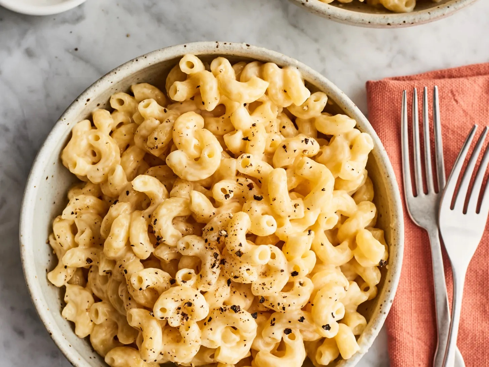

Welcome to Purelistic
Welcome to Purelistic Vegan Catering, where homemade vegan food is made with health, creativity, and flavor in mind.
Our goal is to introduce people to delicious vegan food while showing that eating more plant-based foods can be a fun and educational experience.
<
Food for a Healthy Mind and Body
Diversifying your diet can be an opportunity to try new flavors, ingredients, and meals. Our menu includes homemade vegan foods, desserts, coffee, and tea.
Whether you are already vegan or simply interested in trying something different, Purelistic offers options for anyone interested in exploring plant-based foods.
What We Offer
- Homemade vegan meals
- Vegan desserts and baked goods
- Coffee and tea drinks
- Vegan catering services
- Plant-based food options